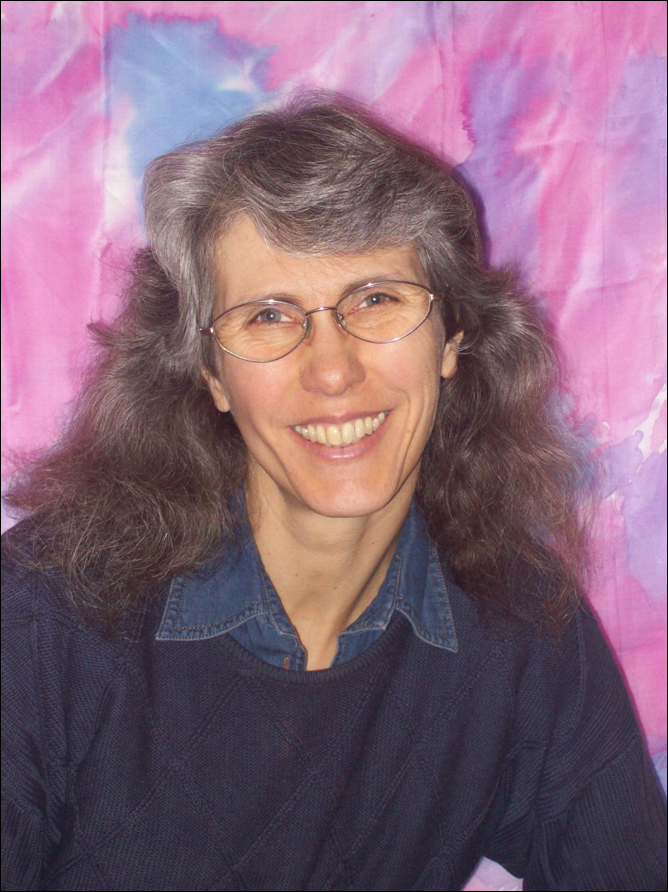
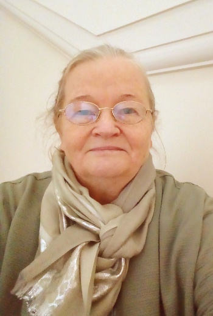

Kurzbiografien

Ingrid Schröder,
Jahrgang 1960, geboren in Wien, Österreich.
Ca. 25 Jahre Berufstätigkeit im Bereich der Bau-, Wohnungs- und Immobilienwirtschaft, anfangs im Angestelltenverhältnis, später selbständig.
Als Mutter von 5 Kindern im Laufe der Jahre intensive Beschäftigung mit medizinischen Fragen, gesunder Ernährung (Vollwertkost etc.) und generell einer gesunden Lebensführung.
Einige Familienmitglieder durfte sie durch schwere Krankheiten, darunter unterschiedliche Krebsformen, begleiten. Sie hat dabei erlebt, wie die Krebserkrankung zum Tod führte, aber auch, dass und wie diese Krankheit überwunden werden konnte.
Durch die Überschneidung vieler Wissensgebiete kam sie über die Beschäftigung mit Medizin und Psychologie auch zu philosophischen Themen, über diese schließlich zu metaphysischen und solchen, die heute die Grenzen der anerkannten Physik darstellen.
Zwischen 1995 und 1998 Besuch vieler Seminare über vedisches Wissen, also die alten indischen Überlieferungen, ab 1998 auch Seminare über den Maya-Kalender.
2005 gab sie ihre eigene Firma in Wien auf und widmete sich mehr der Familie.
2006 begann sie ein Fernstudium an der Veden-Akademie von Marcus Schmieke http://www.veden-akademie.de/ über das Wissen der vedischen (alten indischen) Baukunst (bekannt unter den Begriffen Vastu bzw. Vasati - das indische Pendant zum chinesischen Feng Shui).
Ab 2008 intensives Studium der vedischen Astrologie (Jyotish) an der Astrovedic-Akademie von Nicholas Lewis und Gudrun Lewis-Schellenbeck https://www.astrovedic.de/cms/. Seit 2010 ist sie geprüfte Vedische Astrologin .
Seit 1995 bestand ihr Hauptinteresse allerdings darin, das Wissen um die geistigen Gesetzmäßigkeiten und darüber, wie die Schöpfung funktioniert, zu erweitern und dieses Wissen im Alltag anzuwenden.
Alle Inhalte, die man auf ihrer Website www.isis-schule.de oder in ihren Veranstaltungen findet, gibt sie auf eine journalistische Art und Weise möglichst neutral weiter.
Seit Anfang 2018 ist sie Mitbegründerin des Vereins Perlenschnur e.V. und dort aktiv tätig, nicht nur organisatorisch, sondern auch als Referentin.
(ausführlicher hier: www.isis-schule.de/index.php/persoenliches )
>>>>> <<<<<

Gabi Müller,
Jahrgang 1955, stammt aus Dresden, wo sie auf der Technischen Universität 1974 ihr Physik-Studium begann und 1977 an der Humboldt-Universität zu Berlin fortsetzte. 1979 schloss sie das Studium als Diplomphysikerin ab (Halbleiter-Theorie zu Auger-Rekombinationen).
In der Folge war sie zuerst Wissenschaftliche Mitarbeiterin am Centrum Astronomiczne in Warschau (Polen) zur numerischen Modellierung eines konvektiven Sternatmosphären-Modells, danach Wissenschaftliche Mitarbeiterin an der Akademie der Wissenschaften (AdW) der DDR in Berlin am Zentralinstitut für Kybernetik und Informationsprozesse (digitale Robotersteuerungen), anschließend am AdW-Institut für Kosmosforschung (internationale Raumfahrtprojekte, Projekt Halley und Phobos) und schließlich am AdW-Institut für Informatik und Rechentechnik bei Prof. Manfred Peschel (Nichtlineare Dynamik, Systemtheorie, Fraktale).
Nach dem Fall der Berliner Mauer gab es am Institut noch ein Jahr Kurzarbeit. Viele ihrer Kollegen nutzten Angebote der westdeutschen Industrie, zum Beispiel Atomkraftwerksbau bei Siemens. Sie wollte jedoch keine industrielle Auftragsforschung betreiben und zog es vor, eine Heilpraktiker-Ausbildung an der Paracelsus-Schule in Westberlin zu beginnen und war ab 1993 in Ostberlin und Kamenz als Heilpraktikerin selbständig tätig, zusammen mit einem Arzt und sensitiven Heiler aus Georgien.
Private Veränderungen führten sie nach Rheinland-Pfalz, wo sie ab 1998 als PHP-Programmiererin tätig war, danach im IT-Bereich selbständig und kurz wieder als Heilpraktikerin. Seit 2010 ist sie in Heimarbeit mit Datenbank-Programmierung und ab April 2018 im Vorruhestand, mit PHP nur noch als Minijob.
Parallel zur Heilpraktiker-Ausbildung und danach beschäftigte sie sich mit
- Reiki (Meister-Grad)
- Transzendentale Meditation
- Merkaba-Meditation nach Drunvalo Melchizedek
und qualifizerte sich für die alternativen Heilmethoden:
- Akupunktmassage nach Penzel
- Fußreflexzonenmassage
- Heilhypnose
- Bioresonanz (Mora-Super-Anwendungen) und
- Neue Medizin nach Dr.med.Ryke Geerd Hamer.
Seit 1987 betrieb sie nebenher private Hobbyforschung zu Bio- und Resonanzphysik sowie Fraktale. Im Rahmen dieser privaten Forschungen entstand ihr Wirbelweltbild.
(ausführlicher hier: viva-vortex.de und das-universum-spinnt.de )
|